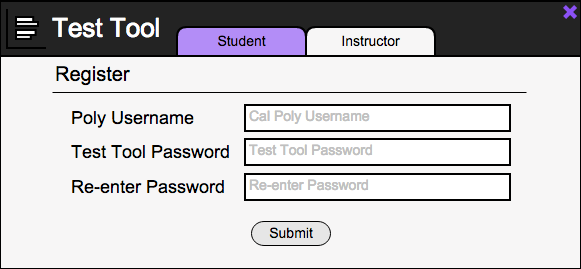

2.1.2. Student Account Registration
Once a student clicks the Register button from the previous login page, a new page will appear allowing the student to Register an account with Test Tool. This screen can be seen in Figure 1.

Figure 1: Student Registration screen.
The Registration window has two tabs at the top of it labeled “Student” and “Instructor”. Selecting either of the tabs takes the user to the proper Account Registration window. The window opens with the Student tab selected by default. The Poly Username text field is for the student to enter their Cal Poly Portal username into for use in Test Tool. The Test Tool Password and Re-enter Password text fields are for the student to create a password unique to their Test Tool account and re-enter it for verification. The Submit button can be clicked after all fields are populated to create the account for the student.
Prev: appt-scheduling
| Next: more-scheduling
| Up: functional
| Top: index